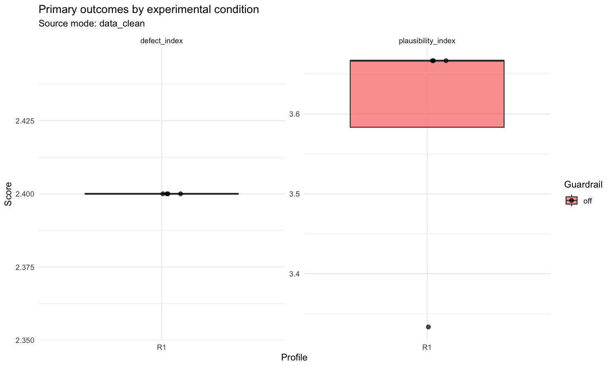

Obrázok 2
Odhadované marginálne priemery jadrových modelov

Štýl je nastavený podľa vzoru z bakalárky: caption nad objektom, bez zvislých čiar, s horizontálnymi oddeľovačmi.
Tabuľka 1
Základná charakteristika datasetu
| metric | value |
|---|---|
| source_mode | data_clean |
| n_raters | 1 |
| n_transcripts | 4 |
| n_seeds | 4 |
| n_ratings | 4 |
| mean_ratings_per_transcript | 1 |
| min_ratings_per_transcript | 1 |
| max_ratings_per_transcript | 1 |
| severity_error_mode | direct_1to5 |
| guardrail_off | 4 |
| profile_R1 | 4 |
| guardrail_off_profile_R1 | 4 |
Poznámka. Source mode: data_clean
Tabuľka 2
Deskriptívne ukazovatele položiek a kompozitov
| variable | n non missing | levels used | median | iqr | mean | sd | min | max | section |
|---|---|---|---|---|---|---|---|---|---|
| a1 | 4 | 2 | 2 | 0.25 | 2.25 | 0.5 | 2 | 3 | items |
| a2 | 4 | 2 | 2 | 0.25 | 2.25 | 0.5 | 2 | 3 | items |
| a3 | 4 | 1 | 3 | 0 | 3 | 0 | 3 | 3 | items |
| a4 | 4 | 3 | 1.5 | 1.25 | 1.25 | 0.957 | 0 | 2 | items |
| a5 | 4 | 2 | 1.5 | 1 | 1.5 | 0.577 | 1 | 2 | items |
| a6 | 4 | 1 | 3 | 0 | 3 | 0 | 3 | 3 | items |
| a7 | 4 | 2 | 2 | 0.25 | 2.25 | 0.5 | 2 | 3 | items |
| a8 | 4 | 1 | 2 | 0 | 2 | 0 | 2 | 2 | items |
| a9 | 4 | 2 | 0 | 0.25 | 0.25 | 0.5 | 0 | 1 | items |
| g1 | 4 | 2 | 3.5 | 1 | 3.5 | 0.577 | 3 | 4 | items |
| g2 | 4 | 3 | 2.5 | 1.25 | 2.75 | 0.957 | 2 | 4 | items |
| g3 | 4 | 1 | 4 | 0 | 4 | 0 | 4 | 4 | items |
| g4 | 4 | 3 | 3.5 | 1.25 | 3.25 | 0.957 | 2 | 4 | items |
| g5 | 4 | 3 | 3 | 0.5 | 3 | 0.816 | 2 | 4 | items |
| guess_confidence | 4 | 2 | 3 | 0.25 | 3.25 | 0.5 | 3 | 4 | items |
| r1 | 4 | 1 | 2 | 0 | 2 | 0 | 2 | 2 | items |
| r2 | 4 | 2 | 2 | 0.5 | 2.5 | 1 | 2 | 4 | items |
| r3 | 4 | 1 | 2 | 0 | 2 | 0 | 2 | 2 | items |
| r4 | 4 | 2 | 4 | 0.5 | 3.5 | 1 | 2 | 4 | items |
| r5 | 4 | 1 | 2 | 0 | 2 | 0 | 2 | 2 | items |
| s1 | 4 | 2 | 2 | 0.25 | 2.25 | 0.5 | 2 | 3 | items |
| s2 | 4 | 2 | 2 | 0.25 | 2.25 | 0.5 | 2 | 3 | items |
| defect_index | 4 | 2.4 | 0 | 2.4 | 0 | 2.4 | 2.4 | composites | |
| impact_error | 4 | 1 | 0 | 1 | 0 | 1 | 1 | composites | |
| plausibility_index | 4 | 3.667 | 0.083 | 3.583 | 0.167 | 3.333 | 3.667 | composites | |
| severity_error | 4 | 1 | 0 | 1 | 0 | 1 | 1 | composites | |
| symptom_error_mean | 4 | 0.5 | 0.194 | 0.472 | 0.19 | 0.222 | 0.667 | composites |
Poznámka. Export spája item-level a composite-level deskriptíva do jedného manuscript-ready prehľadu.
Tabuľka 3
Frekvenčné rozdelenie kľúčových položiek
| variable | response | n | prop |
|---|---|---|---|
| g1 | 3 | 2 | 0.5 |
| g1 | 4 | 2 | 0.5 |
| g2 | 2 | 2 | 0.5 |
| g2 | 3 | 1 | 0.25 |
| g2 | 4 | 1 | 0.25 |
| g3 | 4 | 4 | 1 |
| g4 | 2 | 1 | 0.25 |
| g4 | 3 | 1 | 0.25 |
| g4 | 4 | 2 | 0.5 |
| g5 | 2 | 1 | 0.25 |
| g5 | 3 | 2 | 0.5 |
| g5 | 4 | 1 | 0.25 |
| r1 | 2 | 4 | 1 |
| r2 | 2 | 3 | 0.75 |
| r2 | 4 | 1 | 0.25 |
| r3 | 2 | 4 | 1 |
| r4 | 2 | 1 | 0.25 |
| r4 | 4 | 3 | 0.75 |
| r5 | 2 | 4 | 1 |
| s1 | 2 | 3 | 0.75 |
| s1 | 3 | 1 | 0.25 |
| s2 | 2 | 3 | 0.75 |
| s2 | 3 | 1 | 0.25 |
Poznámka. Určené najmä pre G1 až G5, S1, S2 a R1 až R5; pri finálnom reporte sa dá podľa potreby zúžiť.
Tabuľka 4
Vnútorná konzistencia ratingových blokov
| block | n items | n rows | alpha | omega | status | detail |
|---|---|---|---|---|---|---|
| g1_g5 | 5 | 4 | -0.933 | ok | Alpha estimated; omega failed. | |
| plausibility_core | 3 | 4 | -8 | ok | Alpha estimated; omega failed. | |
| r1_r5 | 5 | 4 | -Inf | ok | Alpha estimated; omega failed. |
Tabuľka 5
Interrater reliabilita hlavných outcome-ov
| outcome | icc type | estimate | conf low | conf high | status | detail |
|---|---|---|---|---|---|---|
| plausibility_index | ICC2k | skipped | Need at least 2 transcripts and 2 raters for ICC. | |||
| defect_index | ICC2k | skipped | Need at least 2 transcripts and 2 raters for ICC. | |||
| s1 | ICC2k | skipped | Need at least 2 transcripts and 2 raters for ICC. | |||
| s2 | ICC2k | skipped | Need at least 2 transcripts and 2 raters for ICC. |
Tabuľka 6
Súhrn jadrových zmiešaných modelov
| outcome | model type | term | estimate | std error | statistic | p value | conf low | conf high | status | detail | model family |
|---|---|---|---|---|---|---|---|---|---|---|---|
| plausibility_index | lmm | skipped | Insufficient rows or factor levels for LMM. | lmm | |||||||
| defect_index | lmm | skipped | Insufficient rows or factor levels for LMM. | lmm | |||||||
| symptom_error_mean | transcript_lmm | skipped | Insufficient transcript rows or factor levels for transcript-level LMM. | lmm | |||||||
| severity_error | transcript_lmm | skipped | Insufficient transcript rows or factor levels for transcript-level LMM. | lmm | |||||||
| impact_error | transcript_lmm | skipped | Insufficient transcript rows or factor levels for transcript-level LMM. | lmm | |||||||
| g2 | clmm | skipped | Insufficient rows, levels or response variation for CLMM. | clmm | |||||||
| g5 | clmm | skipped | Insufficient rows, levels or response variation for CLMM. | clmm | |||||||
| s1 | clmm | skipped | Insufficient rows, levels or response variation for CLMM. | clmm | |||||||
| s2 | clmm | skipped | Insufficient rows, levels or response variation for CLMM. | clmm |
Poznámka. V kompaktnej podobe spája LMM a kľúčové CLMM výstupy.
Obrázok 1
Primárne outcome-y podľa experimentálnych podmienok

Obrázok 2
Odhadované marginálne priemery jadrových modelov